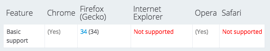

绘制
- 重绘 Canvas
- 更新纹理
交互
- 3D 射线求交
- 得到交点在三角面片的重心坐标
- 计算出在 Canvas 中的坐标
- 2D 图形拾取
Why Canvas ?
碰到的问题以及方案
层级 Hierarchy
样式 Style
变换 Transform
绘制
填充颜色, 描边颜色，描边线宽，图片高宽
position, rotation, scale
分层绘制
计算变换矩阵
找到图形，更新包围盒，裁剪
放入渲染列表
zlevel, z
每次都需要重新构建路径
excanvas 不支持
Non Zero Winding Rule
计算点到线段和曲线的距离
var path = new Path(ctx);
path.moveTo(...);
path.lineTo(...);
...
if (path.contain(x, y)) {...}
if (path.containStroke(x, y)) {...}
var path = new Path2D();
...
if (ctx.isPointInPath(path, x, y)) {...}
if (ctx.isPointInStroke(path, x, y)) {...}


保留上一帧的图片，与当前帧混合
backCtx.drawImage(canvas, 0, 0, width, height);
ctx.clearRect(0, 0, width, height);
ctx.globalAlpha = 0.9;
ctx.drawImage(backCanvas, 0, 0, width, height);
ctx.globalAlpha = 1;
....
gl.drawArrays(gl.POINTS, 0, vertexCount);
Vertex Shader
attribute float size; ... gl_PointSize = size; ...
Fragment Shader
gl_FragColor = color * texture2D(sprite, gl_PointCoord);
WebGL 只支持直线绘制 - 曲线细分
减小 JS 顶点的计算以及传输开销
float onet = 1.0 - t;
vec3 position = onet * onet * (onet * p0 + 3.0 * t * p1)
+ t * t * (t * p3 + 3.0 * onet * p2);
多个不透明度逐渐衰减的图形